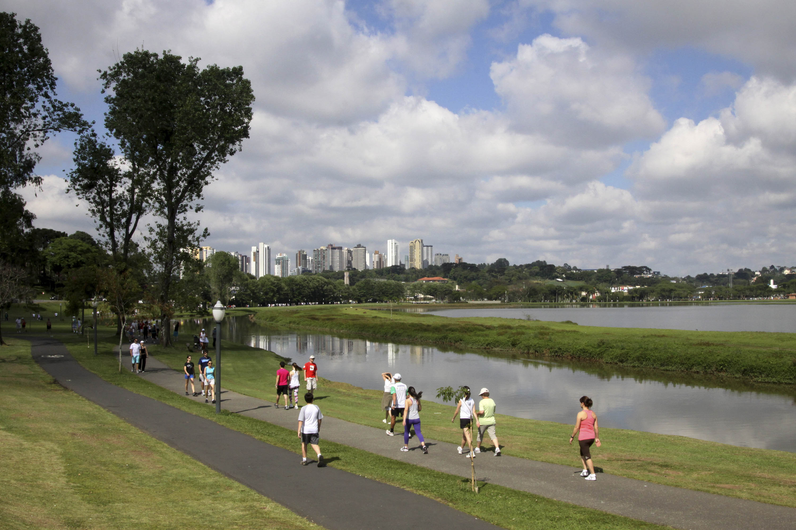

Parque Barigui
Natureza e lazerUm dos parques mais conhecidos de Curitiba, ideal para caminhadas, atividades físicas e momentos de descanso.
📍 Bigorrilho, Mercês, Santo Inácio e Cascatinha.
✓ Acesso gratuito
O que fazer?
Caminhar, pedalar, observar capivaras à distância e fotografar o lago.